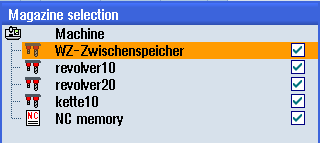

You can directly select the buffer memory, the magazine, or the NC memory.
Procedure
 | 1. | The tool list is opened.
|
| | 2. | Press the "Magazine selection" softkey. |
| | | If there is only one magazine, you will move from one area to the next (i.e. from the buffer memory to the magazine, from the magazine to the NC memory, and from the NC memory back to the buffer memory) each time you press the softkey. The cursor is positioned at the beginning of the magazine each time. |
| | | - OR - |
| | | If there is more than one magazine, the "Magazine Selection" window opens. Position the cursor on the desired magazine in this window and press the "Go to ..." softkey. The cursor jumps directly to the beginning of the specified magazine. |
Hiding magazines

 | | Deactivate the checkbox next to the magazines that you do not want to appear in the magazine list. |
The magazine selection behavior with multiple magazines can be configured in different ways.
 | Machine manufacturer Please observe the information provided by the machine manufacturer. |
Further information
Additional information on the configuration options is provided in the Tool Management Function Manual.